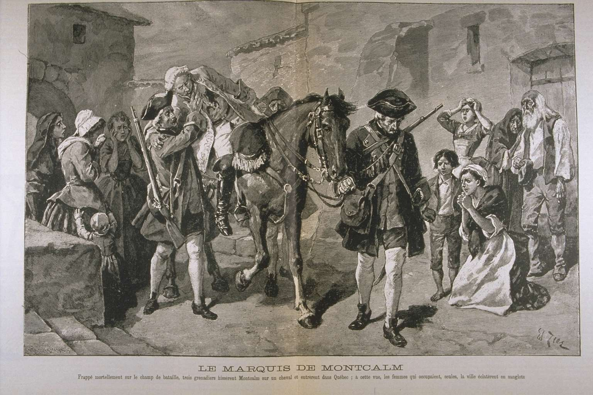

|
Battle
of the Plains of Abraham
A short half-hour. The Battle of the Plains of Abraham, on the morning of September 13, 1759, lasted less than an hour, all told. It is a brief moment in history, heavy with consequences. It heralds the ruin of France's empire in America. A year later, New France capitulates. In 1763 the Treaty of Paris seals the fate of the French Canadians. The historian Guy Frégault calls that famous September 13 « the Day of Blunders» . The two generals, the French Montcalm and the English Wolfe, make unforgivable mistakes. Neither is up to the job. Quebec surrenders while victory is still possible.
Around 4 a.m., a Canadien arrives out of breath with the bad news. The general's secretary, Marcel, wakes his chief. Montcalm refuses to listen to the messenger: it is impossible for an army to reach the Plains up the cliff. He bawls out his secretary and goes back to bed. An hour later a second messenger reaches Beauport with a message from Lieutenant-Colonel de Bernetz, who commands Quebec in Ramezay's absence. This time there can be no doubt. Montcalm gets up spitting every curse on earth, as is his habit. Around 6 a.m. he sets off with his troops toward Quebec. He would have done better to stay in bed. Montcalm's battle The English armada, 49 warships and 119 troop transports strong, arrives before Quebec in June. The army sets up on the Île d'Orléans and at Pointe Lévy. Wolfe commands 8,500 soldiers. Montcalm has more than 15,000 men under him, counting the regular soldiers, the Canadien militiamen and the Indian allies; he has the advantage of holding a fortified position that the enemy must take by storm. The English have only a few months to take Quebec. Winter is Montcalm's best ally. All he has to do is hold off the enemy until the cold season, and the enemy will have to go home empty-handed. That is reckoning without the pile-up of errors of judgment and strategic blunders. First major mistake: Pointe Lévy, opposite Quebec, is left undefended; Admiral Charles Saunders installs 3,000 men and powerful batteries there. The Canadiens had warned Montcalm about this. The French general and his staff had judged the distance too great for the artillery to bombard the town. A bad call. For two months, the English gunners are able to bombard Quebec day and night. They reduce the capital to ruins. When Vaudreuil authorizes a detachment of volunteers and regular soldiers to attack Pointe Lévy, it is too late. The position is impregnable. Second big mistake: Montcalm is poorly informed about the morale of the enemy troops and of their leader; he does not know that Wolfe is seriously ill and that discontent is spreading among his troops. Disheartened, Wolfe has already decided to lift the siege by September 20 at the latest. The night attack by the Foulon beach is a desperate attempt to save face. Finally, Montcalm's most tragic mistake was to give battle on the Plains, that is, on Wolfe's ground. All he had to do was surround the enemy and wait for reinforcements from Bougainville, held in reserve at Cap-Rouge at the head of 3,000 soldiers, the flower of the French army. Wolfe's 4,800 men are frozen with fear on the Plains. They are surrounded by Canadien militiamen and Indian warriors who, hidden in the trees and tall grass, pick them off while giving war cries that chill the blood of the bravest. The English soldiers have only one wish: to escape the way they came and get back on their boats. It is 9 a.m. Montcalm has just come in sight of the Plains. Against Vaudreuil's advice, he makes the insane decision to fight a fine European-style battle, with flags, drums and all the trappings. He does not have the troops for it. He makes the Canadiens line up like tin soldiers and stupidly expose themselves to enemy fire. The historian W. J. Eccles writes in the Dictionary of Canadian Biography: « Wolfe had put his army in an extremely perilous situation. He was virtually at Montcalm's mercy. Montcalm chose the one course of action that ensured his defeat...» We know the rest.  Beaten and humiliated, Montcalm has to fall back behind the ramparts of Quebec after his routed army. It is 10 a.m. As he rides his exhausted horse at a walk through the Porte Saint-Louis, he is hit by a stray bullet. In the back. He would die the following night. He would be buried in a shell crater under the Ursulines' chapel. Four days earlier, the commander-in-chief of the colony's French troops had already drafted the act of surrender of Quebec. Before he died, and without telling Governor Vaudreuil, this same Montcalm had time to send a letter of capitulation to General George Townsend, who had replaced the mortally wounded Wolfe. Wolfe's battle Wolfe is 32 at the time. His health is fragile. He suffers from chronic rheumatism and gravel (painful kidney stones). During the month before the final battle he had been bedridden with a serious attack of dysentery. That may explain his foul temper. Physically, he is the opposite of his opponent. Montcalm is short and round as a pumpkin. Wolfe looks like a tall stalk of asparagus. The two generals have in common that they were « little better than second-rate commanders» , in the historian Eccles's words. Both were despised by the competent officers under them. During the three months of the siege of Quebec, Wolfe keeps changing strategy. Every initiative he takes ends in failure. Historians agree that he was lucky on the Plains of Abraham, lucky and helped by the monumental mistakes made by Montcalm. Besides, the idea of attacking by landing upstream from the town was not his. That strategy came from the officers Townshend, Murray and Monckton. For five weeks no serious battle takes place. The English troops are depressed. The officers criticize their leader's indecision. So Wolfe decides on a landing at the Montmorency River on July 31. It is a stinging failure. The English lose 400 men in the clash. Several soldiers desert. The rout at Montmorency could have ended the siege of Quebec. Wolfe takes it very hard. That does not stop him from sending regular troops and American rangers to lay waste the back country and the Côte-du-Sud. This savage expedition achieves nothing militarily. It is a black mark on the record of Wolfe and the whole English army. George Scott commands a detachment of 1,000 soldiers and rangers. He would boast of having razed everything over a distance of 52 miles, between Beaumont and Kamouraska: « We burned 998 good buildings, two sloops, two schooners, 10 longboats, several flatboats and small craft, and we took 15 prisoners...» What George Scott does not say is that his rangers tortured innocent settlers to make them tell where they had hidden their gold, and raped their wives and daughters. It is one of the most gratuitously cruel episodes of the War of the Conquest. By the beginning of September, everything suggests the siege of Quebec will end in a resounding failure. So Wolfe turns to his three senior officers. Montcalm must be taken by surprise with a night landing upstream from Quebec, to cut Bougainville's troops off from those defending Quebec. The first idea is to land at Sillery. At the last minute the attackers switch to the Foulon beach. Montcalm had left this sector guarded by about a hundred Canadien soldiers. They are commanded by one Duchambon de Vergor. Three quarters of the men have been given leave to go and bring in the hay on their farms. The few sentries are overpowered. Vergor himself is asleep, probably knocked out by drink. The English soldiers climb a dry stream bed in the cliff. Before daybreak the English army holds the Plains. Wolfe has just shut his army into a trap that could be deadly. Montcalm will be unable to take advantage of it.
A shameful surrender Governor Vaudreuil is considering surrendering Quebec, but not before exhausting every other possibility. Ramezay, the town's commander, is pushed to give up by a defeatist local petty bourgeoisie. He calls a council of war. Some voices call for the fighting to go on, among them that of the officer Jacau de Fiedmont. Ramezay asks Captain Joannès to raise the white flag. The officer refuses to obey. On September 17 Vaudreuil regains his nerve. He orders Ramezay to hold firm. The Chevalier de Lévis has just arrived from Montréal. He takes command of the French troops. He regroups his army in the Jacques-Cartier valley. He marches on Quebec with Bougainville's elite troops. It is too late. Ramezay cracks. He disregards the governor's orders. He signs the capitulation. It is September 18, 1759. On hearing the news, Lévis cries out in indignation: « It is unheard of to surrender a place that has been neither attacked nor invested» . Poor New France! (Sources: the Dictionary of Canadian Biography; Histoire populaire du Québec, by Jacques Lacoursière; La guerre de la Conquête, by Guy Frégault.) |
 While 4,800 English soldiers form up in battle order on the
Plains, having landed at the Anse au Foulon and climbed the cliff
during the night, General Montcalm is sound asleep at the
Beauport camp.
While 4,800 English soldiers form up in battle order on the
Plains, having landed at the Anse au Foulon and climbed the cliff
during the night, General Montcalm is sound asleep at the
Beauport camp.